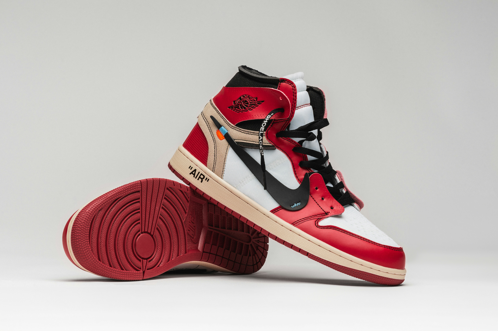
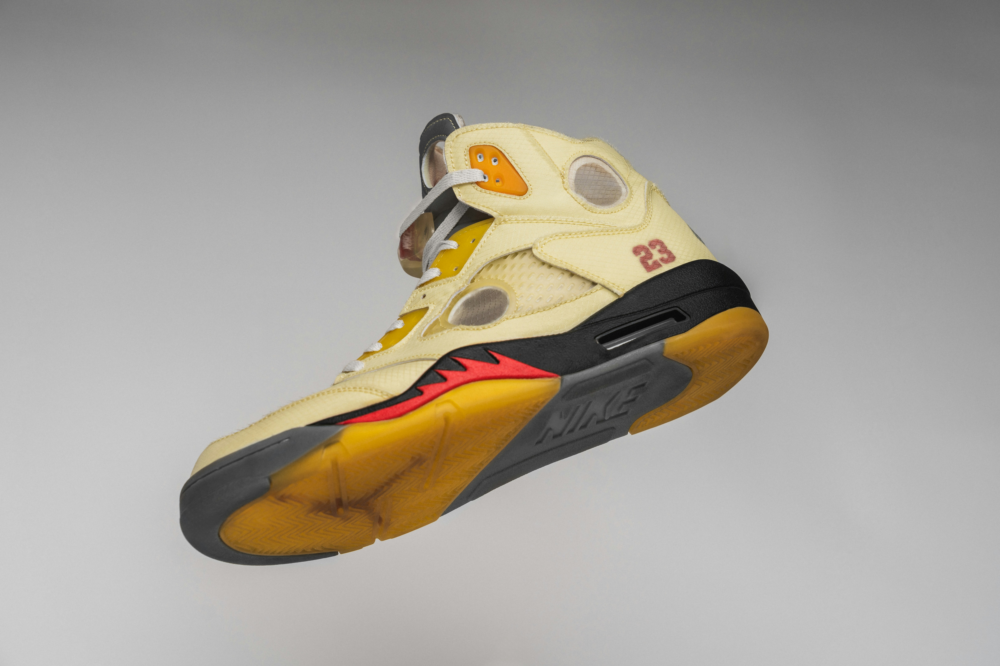

Some Popular Sneakers
-

Off White Air Jordan 1s
Off White x Jordan
A popular and very sought after shoe designed by Virgil Abloh in collaboration with Jordan, prices can be upwards of $7000+
-

Off White Air Jordan 5s
Off white x Jordan
A shoe designed by Virgil Abloh in collaboration with Jordan, price can be upwards of $500-800+
-

Travis Scott Air Jordan 1s
Travis Scott x Jordan
A shoe designed by Travis Scott in collaboration with Jordan, prices can be upwards of $700. There is even a special pair only given out to Family & Friends that reaches the price of $23000+